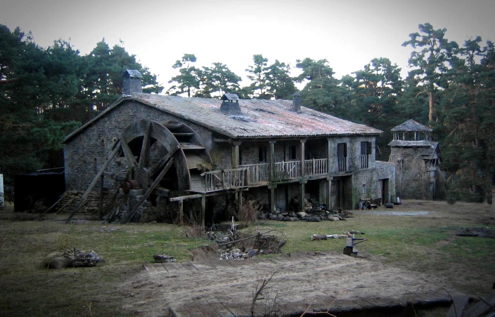

Personajes
Ofelia
Es la heroína de la película. Es una chiquilla que tiene aproximadamente diez años, y a quien le encanta leer, sobre todo cuentos de hadas. Su padre humano era sastre y murió hace unos años. Al mismo tiempo la historia revela que es la reencarnación de la hija del rey de Bezmorra (el reino subterráneo), la princesa Moana. Ofelia es una niña muy inteligente y astuta.
Fauno
Es el personaje que sirve como vínculo entre el mundo real (de los humanos) y el subterráneo (lo mágico) para Ofelia. Se presenta a ella como siendo su servidor, su guía pero es también un personaje solapado. En el mundo de los hombres, sólo Ofelia puede verlo.
Capitan Vidal
Es el padrastro de Ofelia. Es un capitán del ejército franquista. Es un hombre cruel, que tiene el corazón de piedra. Es un verdugo, sin piedad. No le gusta Ofelia, ni siquiera su madre. Las dos solas cosas que ama es el reloj de su padre, que murió al cabo de una batalla, y su hijo.
Mercedes
Es la criada del capitán Vidal pero en realidad es la informante de los republicanos (además su hermano hace parte de ellos). Tiene mucho afecto para Ofelia, un poco como una madre. Odia el capitán Vidal.
Datos curiosos
Maquillaje
Este espectacular maquillaje les permitió ganar el Óscar al mejor maquillaje en 2007. Ambos trabajaron junto a Guillermo del Toro en otras producciones como “el espinazo del diablo” y “Hellboy”, siendo en esta su tercera colaboración. Las ideas para el laberinto del fauno fueron evolucionando de distintas maneras hasta llegar a la versión final de la película. El fauno se inspiró en un sueño lúcido que Guillermo del Toro tuvo repetidamente cuando era niño: cada media noche, se despertaba y un fauno salía gradualmente detrás del reloj de su abuelo. Tomando esto como base el fauno se concibió como una criatura parecida a una cabra con patas peludas. Para el concepto del hombre pálido originalmente, Guillermo había querido que el hombre pálido este sentado en la mesa y al momento en que Ofelia comía la uva el pálido se levantaría, su boca se abriría tanto que saldría una especie de esqueleto de caballo. Luego, se pondría a cuatro patas y se transformara en otra cosa, similar a la escena de “Un hombre lobo americano en Londres”. Esto para que pudiese perseguir a Ofelia, porque de lo contrario, al ser un personaje ciego, tradicionalmente no podría encontrarla. Debido a la falta de presupuesto esta idea no pudo ser concretada.
Un rodaje en peligro
El rodaje comenzó en julio de 2005 y terminó en octubre del mismo año. Casi todo se filmó en los pinares de San Rafael, Segovia. La primera opción fue el Pirineo aragonés, pero se descartó por esta zona tan cercana a Madrid, lo que facilitaba las labores de producción. Espacios importantes en la trama, como la casa, el cuartel, el molino y el propio laberinto, se instalaron en el Prado de Juan Llanos, junto al cauce del Arroyo Mayor. Este lugar es hoy un espacio que atrae a curiosos y turistas, preparados a buscar las huellas del rodaje. En una entrevista con RNE, Guillermo del Toro se hacía eco del terrible incendio de Guadalajara, en el que murieron 11 bomberos y ardieron 2400 hectáreas de bosque. "Cuando se enteraron de que estábamos utilizando explosivos, máquinas de humo y pistolas de fogueo se presentaron en el set y nos retiraron el permiso que teníamos para rodar. Todo se tensó y en algunos momentos hubo gente que se opuso a que siguiéramos rodando".
